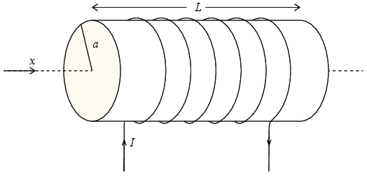

Figuren viser en spole - en solenoide - med diameter \( a \) og lengde \( L \) og \( N \) vindinger.

a) Hva er det magnetiske feltet inne i solenoiden når det går en strøm \( I \) gjennom den?
b) Hva blir fluksen av magnetfeltet gjennom kretsen? Diskuter både den delen av kretsen som utgjør solenoiden og den delen av kretsen som binder endene av solenoiden sammen.